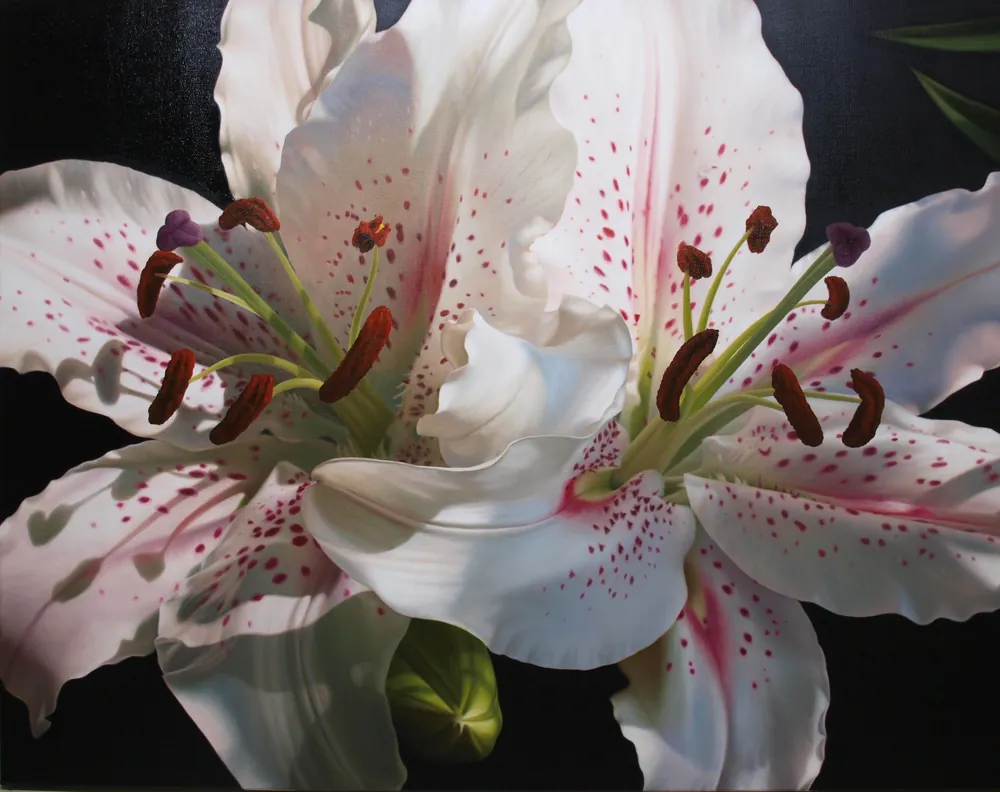

Duftlilien
- Werktitel
- Duftlilien
- Jahr
- 2011
- Maße
- 91 × 116 cm
- Medium
- Ölfarbe
- Status
- In Sammlung
- Sammlung
- Privatsammlung (Rechtswesen)
Bildbeschreibung (nach dem sichtbaren Bild, keine Aussage des Malers)
Das Bild ist eine Nahaufnahme einer Duftlilie: weiße Blütenblätter mit feinen rosafarbenen Sprenkeln, dunkelbraune Staubgefäße. Unten ist eine grüne Knospe zu sehen, der Hintergrund ist schwarz.